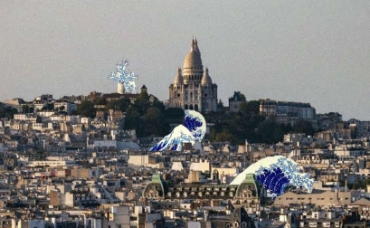

Il est 8h30 ce mardi matin. Douze étudiant·e·s de l'École des Ingénieurs de la Ville de Paris se retrouvent devant le portail de l'école. Chacun·e a été invité·e à refaire, en fauteuil roulant manuel, le trajet qu'il ou elle emprunte chaque jour à pied ou en transports. L'exercice semblait simple. Il ne l'était pas.
Trottoir trop étroit. Bateau de trottoir absent ou défoncé. Porte d'entrée d'immeuble sans automatisme. Couloir de métro trop long pour rejoindre l'ascenseur, lui-même en panne. En l'espace d'une heure, les obstacles se sont accumulés — là où, debout, personne ne les avait jamais remarqués.
« J'ai traversé cette rue des dizaines de fois. Je n'avais jamais vu que le passage piéton débouchait sur un trottoir surélevé de huit centimètres. Huit centimètres qui suffisent à bloquer un fauteuil. »
— Léa, étudiante en 2e année de génie urbain
Un atelier né d'un constat simple
L'idée d'« En Sortant de l'École » est née d'un paradoxe : les futur·e·s ingénieur·e·s et urbanistes qui concevront la ville de demain n'ont, pour la plupart, jamais vécu une situation de handicap moteur. Leur formation leur enseigne les normes — PMR, largeur réglementaire, pente maximale — mais rarement la réalité sensible de ce que signifie se déplacer avec un fauteuil.
L'objectif n'était pas de simuler un handicap, ni de prétendre comprendre ce que vivent au quotidien les personnes en situation de handicap. Il était plus modeste, et pour cela plus honnête : créer un moment d'inconfort cognitif, une rupture dans la perception automatique de l'espace, pour que les étudiant·e·s commencent à voir ce qu'ils avaient appris à ne pas voir.
Ce que les participants ont relevé en une heure
En moyenne, 14 obstacles distincts ont été identifiés par participant sur un trajet de 900 mètres — soit un obstacle toutes les 65 mètres. Parmi eux : 6 problèmes de dénivelé, 4 obstacles sur la chaussée, 3 portes non accessibles et 1 ascenseur hors service.
Le déroulé de l'atelier
Avant le terrain
Chaque participant·e a d'abord tracé, sur une carte, son trajet habituel. Puis nous avons échangé sur leurs anticipations : qu'allaient-ils trouver ? La majorité s'attendait à quelques difficultés ponctuelles. Personne n'avait prévu l'accumulation.
Sur le terrain
Les douze étudiant·e·s sont parti·e·s par binômes — l'un en fauteuil, l'autre à pied avec une grille d'observation. Ils avaient pour consigne de noter chaque obstacle rencontré, sa nature et son impact sur le trajet : contournement, blocage total, aide extérieure nécessaire.

Participants en binôme lors du trajet, Paris 11e — mars 2026
Le débriefing
De retour à l'école, les observations ont été mises en commun sur une grande carte murale. Chaque obstacle était représenté par un point de couleur. En une demi-heure, la carte du quartier était couverte de points. La visualisation collective a été le moment le plus fort de la journée.
- Problèmes de dénivelé (bateaux de trottoir absents ou abîmés)
- Obstacles statiques : mobilier urbain, poubelles, vélos mal garés
- Portes et sas d'entrée non automatisés
- Passages piétons sans signal sonore
- Ascenseurs en panne ou inexistants dans les stations de métro
- Revêtements de sol inadaptés (pavés, gravier, joint mal entretenu)
Ce que l'atelier change — et ce qu'il ne change pas
Nous ne prétendons pas qu'une heure en fauteuil roulant suffit à former des ingénieurs sensibles à l'accessibilité. Ce serait réducteur, et quelque peu condescendant envers les personnes qui vivent ces contraintes chaque jour de leur vie, sans avoir le luxe de les « tester ».
Ce que l'atelier change, c'est le regard. Plusieurs participant·e·s nous ont rapporté qu'ils et elles avaient, dans les jours suivants, spontanément remarqué des obstacles sur leur chemin — sans être en fauteuil, juste en marchant. Cette attention nouvelle est le premier pas vers une pratique professionnelle réellement inclusive.
« Je conçois des espaces publics depuis le bureau, avec des logiciels et des normes. Maintenant j'ai une image. Et cette image, je ne l'oublierai pas quand je dessinerai un trottoir. »
— Thomas, étudiant en 3e année de génie civil
Pour 2026-2027, nous souhaitons élargir cet atelier à d'autres écoles partenaires et intégrer une session de retour d'expérience avec des associations de personnes handicapées, pour que le regard des premiers bénéficiaires de l'accessibilité vienne nourrir la réflexion des futur·e·s concepteur·rice·s.